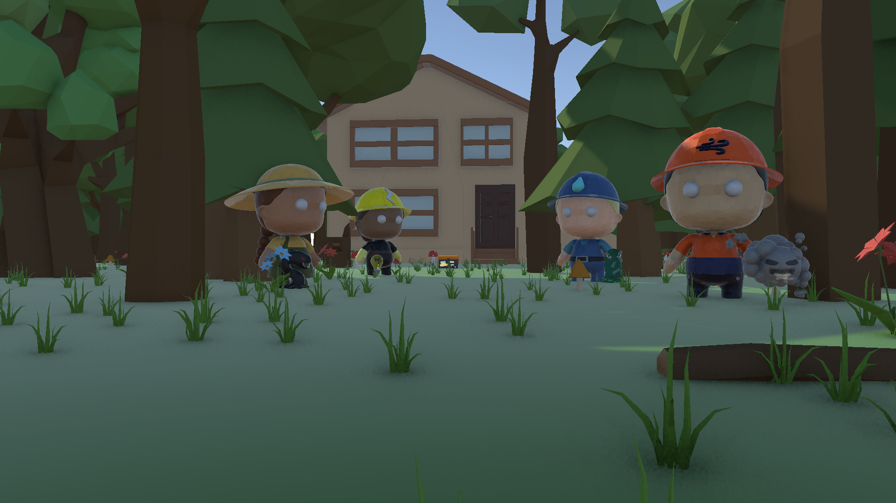
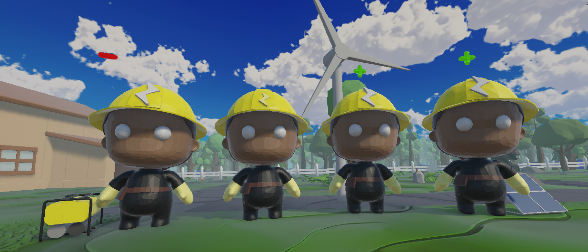
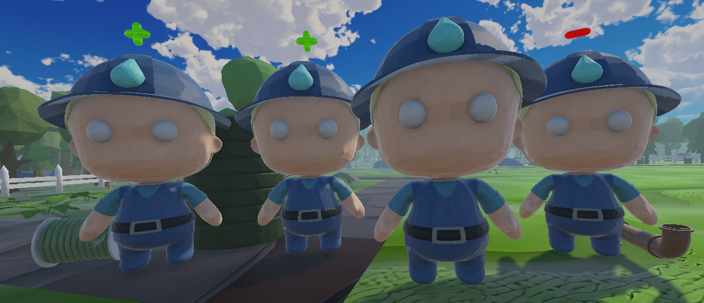
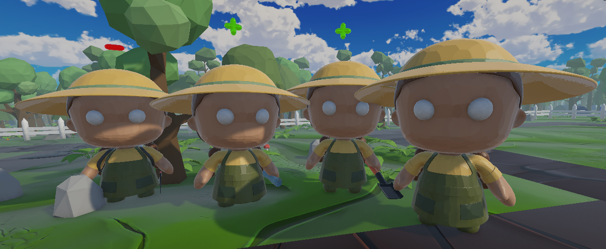
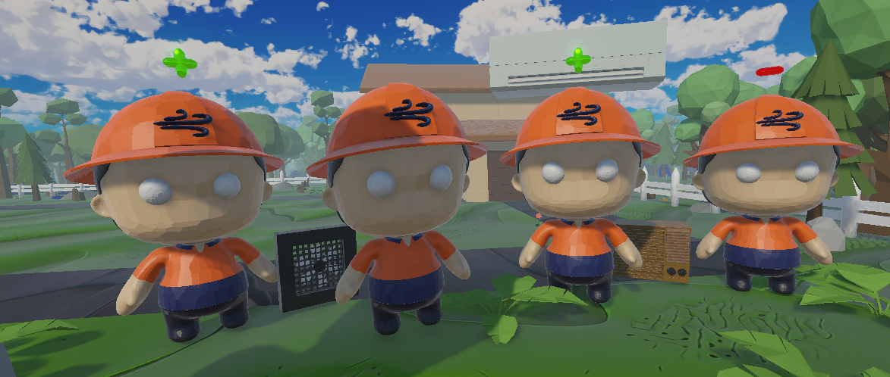

ECO DEFENDERSECO DEFENDERS
企画立案からGDD作成、アビリティのアイデア設計、UI/UX設計、C#でのコーディングまで、ゲームの骨組み全体を担当しました。
I owned the game's core structure end to end — planning, the GDD, ability design, UI/UX design, and C# implementation.
electrician、plumber、gardener、HVAC技術者。実在する建設業の職人をタワーとして配置し、汚染モンスターから家を守るタワーディフェンスです。各職人は「持続可能だが高価な進化」と「安価だが長期的に代償を払う進化」に分岐し、10〜12歳のプレイヤーが説明文ではなく自分の選択を通してサステナビリティを体験します。クライアントはQueenslandの非営利団体CSQで、建設業のキャリアを子どもに伝えることが依頼内容でした。
Electricians, plumbers, gardeners, and HVAC technicians — real construction trades deployed as towers to defend a house from pollution monsters. Each trade branches into sustainable upgrades that cost more, or cheap upgrades that pay a long-term price, so players aged 10–12 experience sustainability through their own decisions rather than through explanatory text. The client was Construction Skills Queensland (CSQ), a non-profit whose brief was to introduce children to careers in the construction industry.
制作プロセスDesign Process
アイデアから完成までの流れです。各ステップの詳しい資料は「資料」セクションからご覧いただけます。
The flow from idea to finished game. Detailed materials for each step are available in the Documents section below.
-
01
アイデアIdea
CSQのブリーフを分析し、エコホームの定義、電気工事士・配管工・大工といった職種の役割、対象年齢(10〜12歳)を整理しました。The SimsやMinecraftを調査した結果、「建築の自由度は高いがサステナビリティの掘り下げが弱い」という空白を見つけ、そこを狙うことにしました。私の最初の企画案は建築シミュレーションでしたが、悪い選択に減点するだけでは学習が受け身になると考え、方向を変えました。
I analysed the CSQ brief to define what an eco-home is, what electricians, plumbers, and carpenters actually do, and who the game is for (ages 10–12). Surveying The Sims and Minecraft showed a gap: both give players building freedom, but neither engages seriously with sustainability. My first concept was a building simulation, but I changed direction after concluding that simply deducting points for bad choices would keep the learning passive.
リサーチとアイデア書を見る →Read the research and concept → -
02
企画Planning
資源の選択を戦略そのものに組み込めるタワーディフェンス形式に転換しました。Eco-Bucks(敵の撃破で得る通貨)、家のHP、職種ごとの基本タワーをGDDで固めたうえで、私はアップグレード設計を担当しました。5職種それぞれにTier2の3分岐を用意し、攻撃・パッシブ・コスト・テーマに加えて、実在職種の出典を各分岐に紐づけています。
We pivoted to tower defense, a format where resource decisions are the strategy. Once the GDD locked in Eco-Bucks (currency earned per kill), house HP, and one base tower per trade, I took ownership of the upgrade system: three tier-2 branches for each of the five trades, each with its attack, passive, cost, theme, and a cited real-world source for the profession it represents.
GDDとスキル設計を見る →Read the GDD and skill design → -
03
試作・検証Prototype & Testing
実装前に紙のプロトタイプで選択肢の見せ方を検証し、その後ワークショップでビルドをプレイテストしました。ここで出た指摘は厳しいものでした。「Eco-Pointがスコアなのか通貨なのか分からない」「タワーを連打するだけで勝ててしまう」「どの職人が何に強いのか分からない」。学習テーマ以前に、選択の意味がUIから読み取れていなかったのです。私はメニューUIの改修を担当し、価格・説明・弱点表示の追加と、予算をマイナスにできない制約を反映しました。
I tested how choices should be presented with a physical paper prototype before implementation, then playtested the build in a workshop. The feedback was blunt: players could not tell whether Eco-Points were a score or a currency, they could win by spamming towers, and they could not tell which trade countered which enemy. The problem was upstream of the learning theme — the UI was not communicating what a choice meant. I took on the menu rework, adding prices, descriptions, and enemy-weakness indicators, and removing the ability to push the budget negative.
試作書とプレイテスト記録を見る →Read the prototype and playtest notes → -
04
完成Ship
最終ビルドでは、目指していたプレイヤー体験 —— 「波を重ねるごとに戦略と緊張が高まり、自分の選択がそのまま次の難易度を決める」 —— を形にできました。教育目的とタワーディフェンスの駆け引きが、別々の要素ではなく一つのシステムとして機能しています。
The final build delivered the player experience we had targeted: an escalating sense of strategy and tension across waves, where every choice directly shapes the difficulty of the next one. The educational goal and the tension of tower defense ended up as one system rather than two separate features.
ゲームプレイ映像を見る →Watch Gameplay Video →
ゲームプレイ映像Gameplay Video
実際のプレイの様子を収めた動画です。
A video of actual gameplay.
Unity WebGLビルドUnity WebGL Build
ブラウザ上で実際に遊べるビルドを準備中です。公開までは、上のゲームプレイ映像をご覧いただけます。
A browser-playable build is being prepared. Until it is up, the gameplay video above shows the game in motion.
資料Documents
私が実際に作成した制作資料です。リサーチからコンセプト、ペーパープロトタイプ、GDD、スキル設計、プレイテスト記録まで、企画が形になっていく順に並べています。
The documents I actually wrote during production, ordered the way the design developed: research, concept, paper prototype, GDD, system design, and playtest notes.
ブリーフ分析Brief Research
クライアント(CSQ)のブリーフを分析し、エコホームの定義、建設業のキャリアパス、対象年齢、既存ゲーム(The Sims / Minecraft)との差別化ポイントを整理しました。
An analysis of the client (CSQ) brief covering what an eco-home is, construction career pathways, the target age group, and how the game would differ from existing titles such as The Sims and Minecraft.
資料を読む →Read document →最初のアイデア書Initial Concept
私が最初に提出した企画案です。この段階では建築シミュレーション寄りでしたが、「建設業の職人をヒーローにする」という後の核になる発想はここで生まれました。
My first concept submission. At this stage the design leaned toward a building simulation, but the idea that later became the core of the game — turning construction trades into playable heroes — started here.
資料を読む →Read document →ペーパープロトタイプPaper Prototype
実装前に紙で作ったプロトタイプです。選択肢の提示方法やプレイヤーの判断の流れを、コードを書く前に手で検証しました。
A physical paper prototype built before implementation, used to test how choices are presented and how players reason about them before writing any code.
資料を読む →Read document →GDD(中間版)Design Concept (Interim GDD)
チームで方向性を固めた段階のGDDです。タワーディフェンスへの転換、Eco-Bucks(通貨)、家のHP、職種ごとの基本タワーがここで確定しました。
The GDD from the point where the team locked in its direction: the shift to tower defense, the Eco-Bucks currency, the house HP system, and one base tower per trade.
資料を読む →Read document →アップグレード / スキル設計Upgrade & Skill Proposal
私が担当した中心的な資料です。5職種すべてについて、Tier2の3分岐(持続可能な2択と、安価で短期的に強い1択)の攻撃・パッシブ・コスト・テーマ・出典をまとめました。
The document I owned. For all five trades it defines three tier-2 branches — two sustainable options and one cheap, short-term-strong option — with attack, passive, cost, theme, and a cited real-world source for each.
資料を読む →Read document →プレイテスト記録Playtest Notes
ワークショップで得たフィードバックと、そこから作った改善タスクの一覧です。UIの情報不足やEco-Pointの誤解など、実際に出た指摘をそのまま残しています。
Raw feedback from a workshop playtest and the task list we derived from it — including the UI's lack of information and players misreading Eco-Points as a score rather than a currency.
資料を読む →Read document →制作の背景・工夫した点Background & Design Decisions
企画の背景Project Background
CSQのブリーフには、子どもに建設業のキャリアを前向きに伝えたいという狙いがありました。しかし職業紹介を説明画面として置くと、プレイヤーはそこを読み飛ばします。そこで職種そのものをタワーの性能に翻訳し、「電気工事士は太陽光に強い」ではなく「太陽光技術者はチェーンライトニングを撃つ」という形で、職業の特徴をプレイの手触りとして触れられるようにしました。
CSQ's brief was to give children a positive introduction to construction careers. But career information presented as an information screen is information players skip. So I translated each profession into tower behaviour instead: not "electricians work with solar" on a panel, but a Solar Technician who fires chain lightning — the character of the job expressed as something you feel while playing.
工夫した点Design Decisions
環境に優しい選択を常に正解にはしませんでした。安価なルート(例:従来型の電気工事士、PVC配管、除草剤散布)は即座に強力ですが、タワーのHPが徐々に減る、周囲の味方の攻撃力が下がるといった代償を持ちます。「正解を選ばされる」のではなく「安い誘惑に負けるかどうかを自分で決める」構造にしたことで、サステナビリティが説教ではなくプレイヤー自身の判断になりました。
I deliberately avoided making the sustainable option the automatic right answer. The cheap branches — the conventional electrician, PVC piping, the pesticide sprayer — are immediately powerful, but carry costs: the tower slowly loses HP, or nearby allies lose attack power. Framing it as "will you take the cheap shortcut?" rather than "pick the correct answer" turned sustainability into the player's own judgement call instead of a lecture.
チームでの役割My Role on the Team
4人チーム(IGB200 Group 3.2)で、私は企画・GDD作成・アビリティ設計・UI設計・コーディングを担当しました。特にアップグレード設計は私が資料をまとめてチームに提案し、実装まで持っていきました。プレイテスト後のメニューUI改修も私のタスクとして進めています。
On a four-person team (IGB200 Group 3.2) I handled planning, the GDD, ability design, UI design, and programming. The upgrade system in particular was mine end to end: I wrote the proposal, pitched it to the team, and saw it through to implementation. The menu UI rework that came out of playtesting was also assigned to me.
学んだこと・今後の課題Lessons Learned & Next Steps
プレイテストで一番効いたのは、システムの完成度ではなくフィードバックの不足でした。「Eco-Pointがスコアだと思った」という一言は、私の設計意図がUIを通ってプレイヤーに届いていなかったことを意味します。どれだけ設計資料を書いても、画面上で伝わらなければ存在しないのと同じだと学びました。今後は、各進化ルートの選択率を計測し、意図した葛藤が実際に起きているかを検証したいです。
The most useful thing playtesting exposed was not a broken system but missing feedback. "I thought Eco-Points were a score" meant my design intent was not surviving the trip through the UI to the player. However thorough the design document, a rule that the screen does not communicate may as well not exist. Next, I would instrument upgrade-path selection rates to check whether the trade-off I designed is actually creating the tension I intended.
スクリーンショットScreenshots




